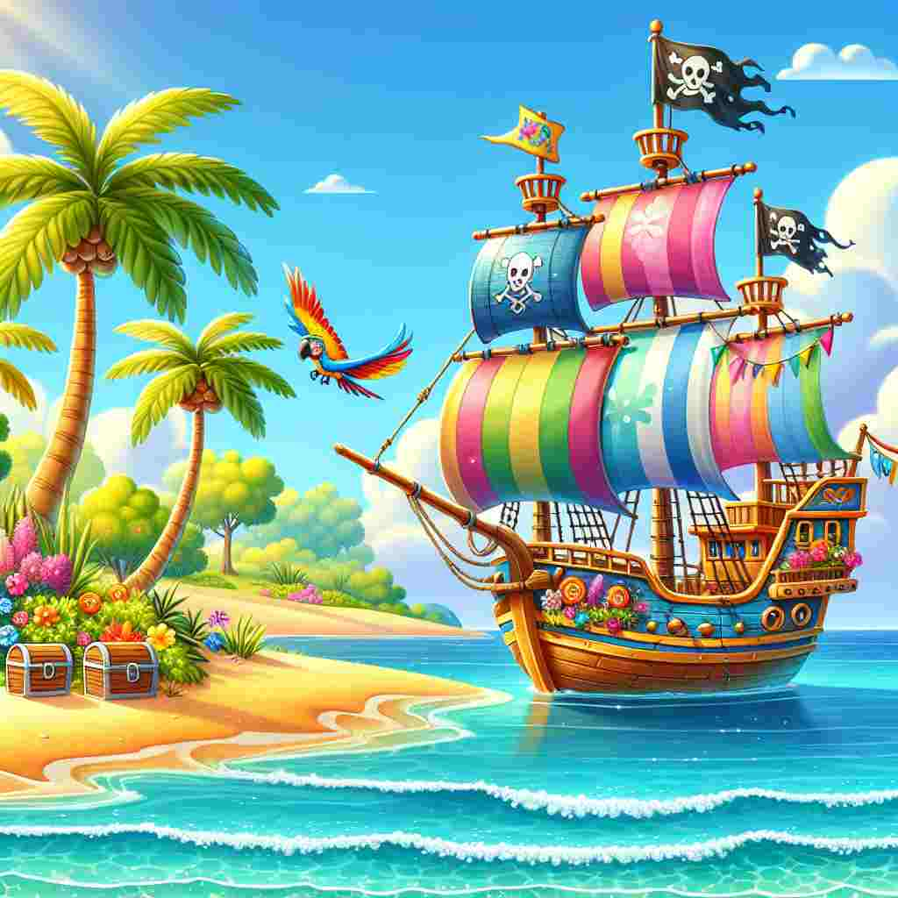

Du hast eine Schatzkarte gefunden und bist auf der passenden Insel gelandet.
Um die Schatzkiste zu öffnen, musst du verschiedene Orte auf der Insel besuchen und Hinweise sammeln.
Zwischen den Orten kannst du wechseln, wenn du die richtigen HTML-Hyperlinks eingibst: